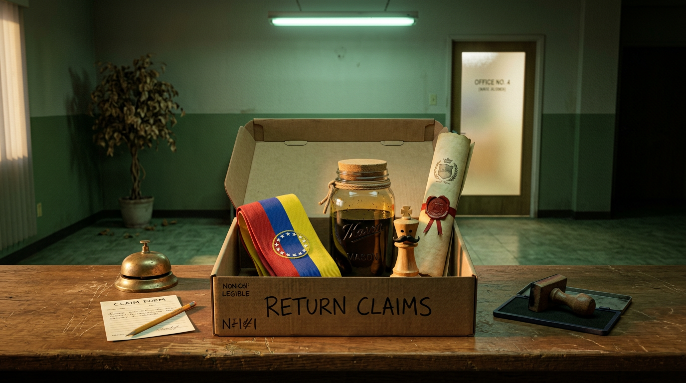

Impeachment de Hegseth: ¿Qué Pasa con Maduro y Venezuela?
Si Echan al Hombre que Robó al Rey, ¿Alguien Tiene que Devolverlo? (Un Venezolano en el Agujero Negro de Hegseth en Lugar de Revolver Bob’s Burgers)
Voy a ser honesto sobre la alternativa.
La alternativa era Bob’s Burgers. Otra vez. Me vi todas las temporadas. Me las sé de memoria. Puedo mover los labios con las líneas de Linda medio segundo antes de que ella las diga, lo cual es una habilidad, un grito de auxilio, y algo que mi esposa me pidió que dejara de hacer en público.
Y no le estoy tirando. No tiene nada de malo pasar un martes en un mundo de dibujos animados donde lo peor que puede pasar es un restaurante rival en la misma cuadra. Lo que digo es que cuando te sabés una serie tan bien que la podés doblar, deja de ser una serie y se convierte en una manta con peso.
Así que elegí la otra opción. El agujero negro. El que sabés que te va a comer el tiempo, y entrás igual, como un labrador al que le dijeron que el lago está frío.
Esto es lo que encontré en el fondo. Traé una linterna. Traé un abogado. Traé algo marrón para servirte.
El Pibe del Frat con el Portapapeles Nuclear
Arrancó el domingo.
John Oliver le dedicó un episodio entero de Last Week Tonight a Pete Hegseth, el Secretario de Defensa, el hombre que la administración también insiste en llamar Secretario de Guerra, como un tipo llamado Kevin que insiste en que lo llamen “El Kev.”
Y después de verlo, te quedás con un solo pensamiento dando vueltas: ¿cómo lo nombró alguien? No “por qué.” El por qué es fácil. Lealtad, televisión, mandíbula. Digo CÓMO. Mecánicamente. Quién firmó el papel. Si había lapicera. Si la lapicera intentó escapar.
Estamos hablando de un pibe del frat con complejo de dios y un portapapeles nuclear. El tipo que haría una keguera en un velorio, daría el discurso, y después le preguntaría a la viuda si vio sus lentes de sol.
El hombre resumió alguna vez su filosofía de guerra en un eslogan que aparentemente pensó que era para remeras: “Máxima letalidad, no legalidad tibia.” Leélo dos veces. Rima. Eso es lo único que hace bien. Es un crimen de guerra con jingle.
El equipo de Oliver hizo lo políticamente correcto y le pidió comentario al Pentágono. Según Oliver, un vocero del Pentágono respondió sugiriendo que deportaran a John Oliver. No refutar. No aclarar. Deportar. El Departamento de Guerra respondió el mail de un comediante con una amenaza de exilio, que es la cosa más consistente con su imagen que un organismo del gobierno haya hecho desde que la IRS inventó el formulario que te pide que llenes el formulario.
Los Votantes Salieron. Solo Trajeron Otra Lapicera.
Acá está la parte del episodio de Oliver que me reorganizó el mobiliario mental.
Las elecciones de medio término fueron el 3 de noviembre. Los republicanos no perdieron solo la Cámara. Perdieron la Cámara Y el Senado, en una ola que el New York Times estimó en aproximadamente 13 puntos de diferencia en el voto legislativo nacional. Los demócratas voltearon distritos que Trump había ganado por hasta 18 puntos.
Y la respuesta del Presidente, en Truth Social, fue preguntarse en voz alta cómo las encuestas podían haberse equivocado tanto. Como si las encuestas lo hubieran hecho. Como si un pasante de Quinnipiac hubiera ido puerta a puerta personalmente.
Esto es lo que se le escapa, y es todo: el electorado republicano SÍ salió. SÍ votó. El problema no fue la concurrencia. Es que no votaron rojo. Miraron la boleta, miraron la guerra, miraron el recibo del supermercado, y eligieron otra lapicera.
Por eso el punto de Oliver pega tan fuerte. Los que Trump y su gabinete de amigos necesitan vigilar ahora no son los demócratas. Los demócratas siempre iban a estar enojados. Son los republicanos. Los que quieren reconstruir el partido después de esto. Los que están atónitos de que haya pasado con ellos adentro. Y los que miran a la Casa Blanca haciendo cuentas: Perdí mi trabajo por culpa de estos tipos.
Lo que nos lleva a Kentucky.
Entra el Hombre que No Tiene Nada que Perder
El lunes, el representante Thomas Massie, republicano de Kentucky, se paró en el piso de la Cámara y leyó en voz alta ocho artículos de juicio político contra Pete Hegseth.
Aclaración rápida de mis propias notas del agujero negro, porque todo el día lo estuve llamando senador en mi cabeza: Massie es un legislador de la Cámara, no del Senado. Y es un pato cojo. Perdió las primarias republicanas en mayo, después de un año siendo el tipo del bloque que siempre levanta la mano en el peor momento. No necesita el respaldo de nadie. No necesita un puesto en comisión. Está vaciando el escritorio y se lleva la grapadora.
No hay criatura más peligrosa en Washington que un hombre de principios que no tiene nada que perder. Es como un mapache arrinconado que se leyó la Constitución.
Lo intentó primero en septiembre. El presidente de la Cámara, Mike Johnson, respondió mandando a todos a su casa temprano para que el voto no pudiera ocurrir, que es el equivalente parlamentario de hacerse el que no escuchó el timbre. La resolución venció. Así que el lunes Massie la volvió a presentar, un documento de 34 páginas, y presentarla de esa manera obliga al liderazgo de la Cámara a programar un voto dentro de dos días legislativos.
Cuando los periodistas le preguntaron qué es un juicio político, dio la definición más clara que escuché: “Un juicio político es básicamente echar a alguien.”
Guardá esa frase. Nos va a volver a morder. Dos veces.
Hegseth, por su parte, lo descartó como artículos falsos cocinados por un legislador derrotado y sus aliados demócratas. Johnson dijo que llevar a juicio político a un secretario de defensa mientras el país está en guerra se vería terrible. Lo cual, justo, pero el país está en guerra en parte por las cosas que están en los artículos, así que es un poco como si el pirómano dijera que ahora no es buen momento para hablar de fósforos.
Los ocho artículos, en español claro:
- Artículos I, II y III: la guerra con Irán. Empezó el 28 de febrero sin el Congreso. Siguió después de que venció el reloj legal de 60 días. Siguió después de que ambas cámaras aprobaron una resolución ordenando la retirada de las tropas, la primera vez en la historia que las dos lo hicieron al mismo tiempo.
- Artículo IV: ignorar las leyes para prevenir muertes civiles, centrado en el ataque de EE.UU. a una escuela primaria en Minab, Irán, en la primera mañana de la guerra, que según la resolución mató al menos 156 personas, la mayoría nenas de entre siete y doce años.
- Artículo V: los ataques a los barcos. “Ejecuciones extrajudiciales.”
- Artículo VI: represalia contra el senador Mark Kelly por un video diciéndoles a los soldados que pueden negarse a cumplir órdenes ilegales.
- Artículo VII: Venezuela. Con el título, y no me lo estoy inventando, “Secuestro de un Líder Soberano Extranjero.”
- Artículo VIII: Yemen.
Ocho. La propia línea de Massie fue que la pregunta no es si te gusta la guerra, sino si el hombre cometió actos que merecen juicio político, y la respuesta es sí, ocho veces.
Soy venezolano. Ya sabés cuál leí primero.
El Artículo VII, o: La Noche que Se Llevaron al Rey del Tablero
Déjame pintarlo como lo pintan los artículos, porque la resolución tiene más pulpa de lo que tiene derecho a tener un documento legal. Se lee como una novela de Tom Clancy si Tom Clancy tuviera un oficial de libertad condicional.
3 de enero de 2026. Una operación llamada ABSOLUTE RESOLVE. Más de 200 efectivos de operaciones especiales estadounidenses en el suelo de Caracas. Más de 150 aeronaves y drones: cazas, bombarderos, helicópteros armados, aviones de guerra electrónica. Una fuerza naval detrás con un grupo de asalto anfibio y un grupo de ataque de portaaviones. Neutralizaron las defensas aéreas de Venezuela, atacaron objetivos alrededor de la capital, metieron un equipo armado en la ciudad, y sacaron a Nicolás Maduro y su esposa, Cilia Flores, del país.
La resolución dice que al menos 83 personas murieron, varias de ellas civiles. Siete estadounidenses fueron bajas.
Después, ese mismo día, el Presidente dio una conferencia de prensa en Mar-a-Lago con Hegseth al lado y dijo que los Estados Unidos gobernaría Venezuela hasta que se pudiera dar una transición ordenada. Y que grandes empresas petroleras estadounidenses entrarían, gastarían miles de millones, arreglarían la infraestructura petrolera rota y empezarían a ganar dinero.
Esa segunda frase es el eje de todo el artículo. El argumento de Massie es que la operación se disfrazó de cumplimiento de la ley antidroga, un operativo antinarcóticos con portaaviones, mientras el objetivo real era el petróleo. Su evidencia es el Presidente describiendo el plan petrolero la noche del raid, antes de que se disipara el humo sobre La Carlota.
Y este es mi detalle favorito, el que me hizo sentarme en la cama: el artículo VII dice que el raid violó el poder del Congreso de dictar “Reglas sobre Capturas en Tierra y Mar.”
Es real. Es el Artículo I, Sección 8 de la Constitución. Los Fundadores, hombres con peluca empolvada que pensaban que las sanguijuelas eran medicina, se sentaron y escribieron, con tinta, que el poder de agarrar cosas en tierra le pertenece al Congreso. Escribieron una regla sobre secuestros antes de escribir una sobre la electricidad. Lo vieron venir desde los 1780. Solo que no podían imaginar los helicópteros.
Doble Golpe
Antes de seguir con Venezuela, tengo que detenerme en el Artículo V, porque es el artículo que me revuelve el estómago, y porque los barcos fueron el acto de apertura de todo lo que pasó en enero.
La resolución lo cuenta así. A partir del 2 de septiembre de 2025, al menos 69 ataques separados a barcos que la administración dijo que transportaban droga, 46 en el Pacífico Este, 21 en el Caribe. Al menos 73 embarcaciones golpeadas. Al menos 243 personas muertas. Sin arrestos. Sin juicios. Sin evidencia presentada en ningún tribunal. Trabajo de Guardacostas, hecho con misiles.
Y el primer ataque, el 2 de septiembre, un barco con 11 personas entre Venezuela y Trinidad: el ataque lo destruyó y lo hizo naufragar. Después, unos 45 minutos más tarde, con dos sobrevivientes aferrados a los restos, se ordenó un segundo ataque. Los mató a los dos.
Eso es el doble golpe. Golpeás el objetivo. Esperás. Golpeás a quien quede vivo.
No voy a hacer un chiste acá. Algunas frases no tienen remate. Bajo las leyes de la guerra, un náufrago aferrado a los restos está fuera de combate, y no lo podés disparar. Eso no es un punto de debate progresista. Está en el manual. Los propios abogados del Pentágono lo enseñaban.
La resolución agrega una segunda escena. El 30 de diciembre, tres barcos golpeados en el Pacífico Este, ocho personas naufragadas. Cuatro meses después del inicio de la campaña, nadie tenía un activo de rescate disponible. La ayuda llegó unas 45 horas después. Los ocho estaban muertos.
Ese es el contexto en el que ocurrió Caracas. No fue un rayo de la nada. Fue una campaña que ya había decidido que la ley era una sugerencia.
El Martes a la Noche, 211 a 204
Así fue como terminó la semana. Spoiler: sin un juicio político.
El martes a la mañana, Hegseth dio su primera conferencia de prensa del Pentágono en seis meses, llamó a todo el asunto un “espectáculo político” y una farsa, y llamó a Massie un legislador disgustado y derrotado. Trump dijo que lo iba a respaldar. “Ganó dos guerras.” Que es una frase que debería venir con una nota al pie del tamaño de una guía telefónica.
El martes a la noche, la Cámara no votó el juicio político. Votó si votar el juicio político. El liderazgo republicano propuso enviar la resolución a la Comisión Judicial, que en el lenguaje de la Cámara es un geriátrico sin horario de visitas. La moción pasó 211 a 204. Cada republicano en la sala votó para enterrarla, excepto uno. Adiviná quién.
Massie quería que cada uno de los ocho artículos se votara por separado, para que los miembros quedaran en actas de a uno por cargo. ¿El ataque a la escuela fue causal de juicio político? ¿Los ataques a los barcos? ¿El secuestro? La remisión se aseguró de que nadie tuviera que responder ninguna de esas preguntas en voz alta. Un voto diseñado para evitar un voto. Se escuchaba el suspiro de alivio desde la rotonda del Capitolio hasta Mar-a-Lago.
Y acá está lo que debería mantener despierto a un Secretario de Defensa. Siete votos. Ese es el margen. Once demócratas ni siquiera aparecieron, junto con siete republicanos. Antes ese mismo día, los republicanos sudaban en privado por si la asistencia baja podía dejar pasar el asunto sin querer. Incluso los críticos republicanos de Hegseth dijeron que no les gustaba pero que no creían que hubiera llegado a “altos crímenes y delitos graves,” que es el equivalente político de decir que el tipo maneja fatal pero que no estás listo para sacarle las llaves.
Así que sobrevivió. Sobrevivió una Cámara de patos cojos con mayoría republicana que acababa de perder su trabajo, en una moción de procedimiento, por siete votos, con más de una docena de asientos vacíos.
Ahora mirá el calendario.
El 3 de enero de 2027, el nuevo Congreso jura. Los demócratas tienen la Cámara. Los demócratas tienen el Senado. Hakeem Jeffries, que se espera sea el próximo presidente de la Cámara, se declaró un “sí firme” antes del voto, y su resumen de Hegseth para la NPR fue de cuatro palabras: “Tiene que irse.” Chuck Schumer respaldó el esfuerzo. Y a diferencia de Massie, una Cámara demócrata no necesita el truco de la resolución privilegiada para forzar un voto. Tiene el mazo. Puede convocar audiencias, citar a los oficiales que sirvieron bajo sus órdenes, ponerlos bajo juramento, y construir el expediente que Massie tuvo que armar con recortes de diarios.
La resolución de Massie muere con este Congreso. Hay que presentar una nueva. Eso es papeleo, no un obstáculo.
Así que esto nunca fue el final de la historia. Fue el ensayo de vestuario. La pregunta nunca fue realmente si alguien vuelve por Pete Hegseth. Es cuándo, y qué pasa con todo lo que hizo cuando lleguemos.
El Agujero Negro, Con Tres Robots
Así que la noche antes de ese voto, en lugar de Bob’s Burgers, abrí ChatGPT, Gemini y Claude uno al lado del otro.
Así hago la investigación ahora, y lo defiendo. No confío en ninguno de ellos solo. Los hago discutir. Le doy a uno la fiscalía, a otro la defensa, y el tercero hace de alguacil que sigue diciendo “objeción, eso no es lo que dice el caso.” Es como organizar un debate entre tres pasantes muy bien leídos que nunca tuvieron resaca.
Y les hice una sola pregunta:
Si Pete Hegseth es sometido a juicio político y condenado, y el Congreso básicamente está declarando que lo que hizo fue ilegal… ¿qué pasa con las cosas que hizo?
Porque esa es la pregunta que nadie en los canales de noticias está haciendo. Todos preguntaban si lo iban a juzgar esta semana. Ahora preguntan si lo van a juzgar en enero. Nadie pregunta qué deshace realmente un juicio político.
Pasamos un par de horas de ida y vuelta. Los robots no estuvieron de acuerdo en algunas cosas, sí en la mayoría, y yo verifiqué el resto contra expedientes judiciales e informes periodísticos como alguien que revisa el odómetro de un auto usado.
Lo que salió es lo más inquietante que leí este año. Para cualquiera. Y para alguien con vínculos venezolanos, es el tipo de inquietante que se sienta en el pecho a las 3 de la mañana como un gato que engordó.
STOP.
Todo lo que está arriba de esta línea fue la historia de cómo llegamos acá, con chistes. Todo lo que sigue es la respuesta a la pregunta, y los chistes se adelgazan, porque la respuesta es una escalera que solo baja.
Cómo Se Destituye a un Secretario de Defensa (Y Por Qué Es Más Difícil que Destituir a un Presidente de Venezuela)
Primero, la mecánica. No soy abogado. Nunca jugué a serlo en televisión, y vi suficiente Suits para saber que esa es la única credencial que importa.
El juicio político tiene dos etapas.
Etapa uno, la Cámara. Una mayoría simple enjuicia. Eso es la acusación. La vieja Cámara acaba de rechazar ese paso, por siete votos. La nueva Cámara, la demócrata, puede tomarlo con su propia mayoría a partir de enero, sin necesitar ayuda republicana.
Etapa dos, el Senado. Para condenar hacen falta dos tercios de los senadores presentes. Si los 100 se presentan, son 67. Si es condenado, es removido del cargo de inmediato, y el Senado puede después votar por separado, por mayoría simple, para impedirle tener cargos federales para siempre.
Ahora hacé las cuentas. El nuevo Senado tiene mayoría demócrata. Una mayoría. No 67. Para condenar, un montón de senadores republicanos tendrían que cruzar, y hasta los republicanos que lo odian les dijeron a los periodistas esta semana que “secretario malo” no es lo mismo que “altos crímenes.” Así que el juicio político en una Cámara demócrata parece probable. La condena en el Senado es un tiro largo.
Pero un tiro largo no está muerto, y el Senado no es el único peligro. Una Cámara demócrata no necesita una condena para hacerle la vida imposible. Tiene las citaciones. Tiene las audiencias. Tiene a los oficiales que estuvieron en la sala el 2 de septiembre, bajo juramento, en cámara, explicando quién ordenó el segundo ataque. Cada semana de eso es una semana en que los senadores republicanos tienen que decidir, otra vez, si quieren sus nombres al lado del de él.
Entonces, el rango realista de resultados va desde “la Cámara lo enjuicia y el Senado se encoge de hombros” hasta “la Cámara lo enjuicia, el Senado lleva un juicio largo y humillante con un desfile de ex oficiales bajo juramento, y lo destituyen.” En algún punto del medio hay una tercera opción, la más washingtoniana de todas: las audiencias se ponen tan feas que renuncia para pasar más tiempo con su podcast antes de que alguien tenga que votar. Las paredes no se están cerrando todavía. Pero alguien definitivamente ya empezó a tomar medidas.
Pero tomemos el escenario soñado. Digamos que es condenado. Se va. Inhabilitado para siempre. El Congreso, con sus actas, dice que hizo ocho cosas que merecían juicio político, una de ellas titulada “Secuestro de un Líder Soberano Extranjero.”
¿Qué pasa con el secuestro?
¿Maduro Queda Libre?
No.
Esa es la primera respuesta y es la más limpia. Nicolás Maduro y Cilia Flores no están detenidos por el juicio político. Están detenidos por una acusación, un caso federal de narcotráfico en el Distrito Sur de Nueva York que se remonta a marzo de 2020, el primer mandato de Trump, que luego fue revisado y dado a conocer el día que los capturaron.
Dos máquinas separadas, pernadas a pisos distintos. Destituir al hombre que manejó la camioneta no abre la celda.
Acá está su situación actual. Ambos se declararon inocentes el 5 de enero. Los dos están en el Centro de Detención Metropolitano de Brooklyn, un edificio con una reputación que haría gesticular a un guardia de cárcel venezolano. En octubre, los fiscales agregaron un nuevo cargo: conspiración para torturar a opositores políticos. Sus abogados pidieron desestimar todo por inmunidad como jefes de Estado, y la respuesta del gobierno es que los Estados Unidos no reconocen a Maduro como presidente desde 2019, así que no hay jefe de Estado que tenga inmunidad. Los argumentos orales sobre la inmunidad están programados para el 17 de noviembre. Una semana desde hoy. El juicio está fijado para junio de 2027.
Pero esperate. Si el Congreso dice que el raid en sí fue ilegal, ¿no contamina todo el caso? ¿El fruto del árbol envenenado? ¿Cada serie policial que alguna vez viste?
Acá es donde el derecho americano hace algo que suena demencial hasta que lo escuchás dos veces. Y después igual suena demencial, solo que más organizado.
Se llama la doctrina Ker-Frisbie. Dos viejos casos de la Corte Suprema, 1886 y 1952, que se reducen a: a los tribunales americanos no les importa CÓMO llegaste acá. Si estás físicamente en la sala del tribunal, el tribunal puede juzgarte. Aunque te hayan arrastrado.
Después llegó Estados Unidos c. Álvarez-Machaín, 1992. La DEA quería a un médico mexicano, Humberto Álvarez-Machaín, por su supuesto papel en la tortura y el asesinato en 1985 del agente de la DEA Enrique “Kiki” Camarena. México no lo extraditó. Así que en 1990 la DEA pagó cazarrecompensas para secuestrarlo de su consultorio en Guadalajara y volar con él a Texas. México estaba furioso. El caso llegó a la Corte Suprema, y en un fallo de 6 a 3 el tribunal dijo que el secuestro no impedía que los Estados Unidos lo juzgaran.
El remate, y es el tipo de detalle que una novela de Rankin mataría por tener: cuando finalmente llegó al juicio, el juez desestimó el caso por falta de pruebas. Se fue. América secuestró a un hombre a través de una frontera internacional, ganó el derecho a juzgarlo en la Corte Suprema, y después no pudo probarlo. Se fue a su casa en Guadalajara. No hay información de si alguien lo llevó.
Entonces: aunque cada senador acordara que el raid fue ilegal, el caso contra Maduro no se desmoronaría automáticamente. Sus abogados tendrían munición nueva. Agitarían el expediente del juicio político como un boleto de lotería ganador. Pero el default legal en los tribunales americanos es que el secuestro no anula el juicio.
¿Quién Lo Devuelve?

Bien. El hombre se queda en Brooklyn. ¿Y Venezuela? ¿Puede Venezuela pedir que lo devuelvan?
Claro. Venezuela puede pedir lo que quiera. Yo puedo pedir un reembolso de mis veinte años.
Caracas podría tomar el expediente del juicio político y agitarlo ante cada foro del planeta: “Miren, el propio Congreso de los Estados Unidos dice que esto fue un secuestro.” Podría pedir que Maduro y Flores sean devueltos. Podría pedir el reconocimiento formal de que su soberanía fue violada, compensación, disculpas, garantías de que no volverá a pasar.
Y acá es donde necesito presentarte la nota al pie más importante de todo este post. Nicaragua.
En 1986 la Corte Internacional de Justicia, el tribunal más alto de la ONU, falló que los Estados Unidos habían violado el derecho internacional en Nicaragua al minar sus puertos y armar a los Contras, y que le debía reparaciones a Nicaragua. Un fallo real. Un tribunal real. Una derrota real.
La respuesta de los Estados Unidos fue, más o menos, “no.” Ya había anunciado que se retiraba de la jurisdicción obligatoria del tribunal. Cuando el Consejo de Seguridad de la ONU intentó pedir el cumplimiento, EE.UU. vetó. Nicaragua eventualmente retiró el reclamo en 1991 después de que un gobierno más amistoso llegara al poder. Las reparaciones nunca se pagaron.
Ese es el precedente. No una teoría. Algo que pasó. Cuando un tribunal con toga, mazo y edificio en La Haya le dijo a Washington que devolviera algo, Washington marcó la casilla de “rechazar” y siguió adelante.
Una condena por juicio político ni siquiera sería eso. Sería el Senado de EE.UU. diciendo que un funcionario de EE.UU. violó la ley de EE.UU. No crea ninguna obligación internacional de devolver a nadie. Para ir de “el Senado dice que fue ilegal” a “Maduro sube a un avión de vuelta a Caracas” necesitarías un proceso legal separado, o un acuerdo diplomático separado, o un milagro separado.
Lo que deja la pregunta que realmente me quita el sueño. La que les hice a los robots de tres maneras distintas para asegurarme de que no me estuvieran complaciendo.
¿Qué pasa con todo lo que creció encima del secuestro?
El Petróleo, el Trono y la Letra Chica
Primero el trono.
Delcy Rodríguez, la vicepresidenta de Maduro, prestó juramento como presidenta en funciones el 5 de enero. Dos días después del raid. Y la extraña verdad que los paneles de los canales de noticias se saltan es esta: el Estado venezolano no cayó. El mismo partido gobernante sigue manejando el país, sin el hombre de arriba, con Washington mirando por encima del hombro.
Si el raid fue ilegal, ¿es ilegítimo su gobierno? No automáticamente. Un gobierno no deja de existir porque la manera en que llegó fue fea. Muchos de los gobiernos del planeta hoy llegaron al poder de maneras que no sobrevivirían a una audiencia en el Senado. Lo que un hallazgo de ilegalidad SÍ haría es colgar un signo de interrogación permanente sobre cómo se decidió el futuro político de Venezuela: por los venezolanos, o por una fuerza militar extranjera y la conferencia de prensa que la siguió.
El derecho internacional, por lo que vale, protege la independencia política de un país independientemente de si su gobierno es democrático. Esa protección no viene con carta de presentación. No es un premio por buena conducta. Es el candado en la puerta de entrada, y está ahí para las casas con malos inquilinos también.
Ahora el petróleo.
El 29 de enero, 26 días después del raid, Rodríguez firmó una nueva ley de hidrocarburos que abrió la industria petrolera venezolana a las empresas privadas y revirtió la regla, escrita por Hugo Chávez en 2006, de que la empresa estatal PDVSA tenía que ser el accionista principal en cada proyecto importante. La nueva ley permite a los operadores privados controlar la producción y las ventas y lleva las disputas a arbitraje independiente en lugar de los propios tribunales de Venezuela. Ese mismo día, el Tesoro de EE.UU. comenzó a aliviar las sanciones sobre el petróleo venezolano y amplió lo que las empresas energéticas americanas podían hacer allí.
El mismo día. Lapicera en Caracas, lapicera en Washington. Una rutina de natación sincronizada ejecutada en crudo.
Después se puso más específico. Para junio, EE.UU. había ampliado las licencias para BP, Chevron, Eni, Maurel & Prom, Repsol y Shell para operar en Venezuela. Y los términos de las licencias, según la prensa financiera colombiana, decían que las disputas podían resolverse en EE.UU., Francia, Singapur o el Reino Unido, y que las transacciones con el gobierno venezolano o PDVSA tenían que interpretarse bajo la ley y jurisdicción estadounidenses. Empresas de Rusia, China, Irán, Cuba y Corea del Norte: no invitadas.
Leélo una vez más. Contratos sobre petróleo venezolano, gobernados por la ley americana.
Ahora. ¿La inversión americana en Venezuela es ilegal? No. Venezuela la necesita. Su industria petrolera es un cadáver oxidado. Más de siete millones de venezolanos se fueron del país desde 2014, y un sector petrolero que funcione es una de las pocas cosas que podría traer a algunos de vuelta. Si alguien te dice que cada barril que se mueve es un crimen, te está vendiendo algo.
Pero el argumento que Massie está haciendo, y el que una condena por juicio político le daría dientes, es más estrecho y más feo: ¿se obtuvieron estos acuerdos bajo coerción militar? ¿Una ley firmada en Caracas menos de un mes después de que un ejército extranjero se fuera con el presidente fue una elección libre, o una nota de rescate con tasa de regalías?
Si esa pregunta alguna vez recibe una respuesta formal, cada contrato posterior tiene una grieta. Futuros gobiernos venezolanos podrían impugnarlos. Venezuela podría pedir compensación. Las empresas americanas podrían encontrarse defendiendo acuerdos en arbitraje con el expediente del juicio político presentado como Prueba A. Estamos hablando de miles de millones de dólares, y abogados que facturan como si les pagaran por sílaba.
Y esto es lo que debería poner nervioso a todos, incluidas las petroleras. Venezuela ya bailó este tango antes. En los 2000 Chávez rompió los contratos de los 90 y nacionalizó los activos de las empresas que no quisieron ir, incluidas ExxonMobil y ConocoPhillips. Esas empresas siguen persiguiendo miles de millones en laudos arbitrales. Dos décadas después.
Entonces el patrón es: un gobierno en Caracas agarra el petróleo, y las empresas pasan veinte años en tribunales. Ahora un gobierno en Washington ayudó a recuperarlo, y si esa recuperación alguna vez es declarada ilegal, el próximo gobierno en Caracas puede arrancar el reloj de nuevo.
El petróleo venezolano no tiene dueños. Tiene inquilinos, y un elenco rotativo de hombres armados que se creen propietarios.
El Problema del Risk
¿Te acordás del Risk? El juego de mesa. Ejércitos de plástico de colores, un mapa del mundo, dados que deciden el destino, y un reglamento doblado en la tapa de la caja que nadie leyó desde la administración Carter.
Lo de Risk es que solo lo jugás con personas que acordaron las reglas. El segundo en que el primo de alguien decide que puede tomar Kamchatka desde Brasil porque “el océano está congelado esta época del año,” el juego terminó. No porque haya ganado. Porque nadie más está jugando.
El derecho internacional es ese reglamento en la tapa de la caja. Nadie lo lee. Todos asumen que está ahí. Funciona solo mientras los grandes jugadores fingen respetarlo, y los más chicos les creen.
Acá está el escenario al que los tres robots y yo seguíamos volviendo, y lo voy a plantear directamente, sin metáfora.
Imaginá que China decide que el presidente de otro país es un criminal. Manda fuerzas. Lo captura. Lo lleva a Beijing para su juicio. Anuncia que las empresas chinas van a “manejar” el sector energético de ese país hasta que haya una transición ordenada.
O que lo hace Rusia.
¿Qué dice Washington?
Hoy, la respuesta americana sería: nuestro caso fue diferente. Teníamos una acusación desde 2020. Nunca lo reconocimos. Robó una elección. Dirigió un narcoestado. El nuestro fue cumplimiento de la ley con mucho material aéreo.
Y algo de eso es incluso cierto, que lo voy a tocar en un segundo.
Pero imaginá que el Senado americano condenó formalmente al secretario de defensa por un artículo titulado “Secuestro de un Líder Soberano Extranjero.” Ahora la respuesta americana es: “Bueno, nuestro propio Senado dijo que el nuestro también fue ilegal, pero… haced lo que decimos?”
El derecho internacional no puede ser un conjunto de reglas que los países poderosos sacan de la tapa de la caja cuando les conviene y vuelven a doblar cuando no. Una vez que un jugador voltea el tablero, todos los demás pueden voltear el suyo. Y la gente que vive en el tablero, los venezolanos, los panameños, los que sigan, no puede ser jugadora. Son los territorios.
El Otro Lado del Tablero
Ahora la autorefutación. Porque me prometí a mí mismo que iba a jugar limpio, y porque si no escribo esta sección, el primer comentario la va a escribir por mí.
Acá está el caso más fuerte para lo que pasó el 3 de enero, como lo hacen sus defensores:
Maduro no era un presidente legítimo. En las elecciones de 2024, el consejo electoral del gobierno lo declaró ganador sin publicar los resultados por mesa. La oposición recolectó y publicó actas de la mayoría de las máquinas de votación mostrando que Edmundo González había ganado. Los observadores internacionales dijeron que el voto no cumplió con los estándares democráticos básicos. Decenas de gobiernos se negaron a reconocer el resultado. EE.UU. había dejado de reconocer a Maduro desde 2019. Si no era el jefe de Estado legal, no hay jefe de Estado al que secuestrar.
Era un hombre buscado mucho antes de todo esto. La acusación por narcoterrorismo data de marzo de 2020. El gobierno ahora agrega conspiración de tortura. El argumento es: arrestar a un fugitivo acusado es cumplimiento de la ley, aunque el arresto requiriera una armada.
El precedente de Noriega corta para los dos lados. Panamá 1989 fue condenado en la ONU como una violación del derecho internacional. Noriega fue condenado de todas formas, y los tribunales lo sostuvieron. El sistema ya miró casi exactamente esta situación antes y dejó que el juicio siguiera adelante.
Los propios venezolanos festejaron. El 3 de enero había venezolanos bailando en las calles de Santiago, Chile, y en ciudades de la diáspora de todo el hemisferio. Presos políticos han sido liberados bajo una amnistía desde entonces. Para muchas familias, el raid terminó algo que las elecciones, las sanciones, las negociaciones y dos décadas de oración nunca lograron.
Y voy a decir esto sin guiño, porque es la parte que hace tan difícil todo esto: ninguno de esos puntos está loco. Algunos de ellos son directamente verdad.
Las Dos Preguntas Que No Son la Misma Pregunta
Acá es donde el agujero negro toca fondo. Se reduce a dos frases, y el truco de toda esta saga es lo mucho que todos trabajan para difuminarlas en una.
Frase uno: Nicolás Maduro debería responder por los crímenes cometidos bajo su gobierno.
Frase dos: Los Estados Unidos tienen el derecho de bombardear Venezuela, llevarse a su presidente, y decidir el futuro político del país y quién extrae su petróleo.
La primera no prueba la segunda.
Maduro podría ser culpable de cada cargo en esa acusación de Nueva York, cada uno de ellos, y aún así eso no haría legal la operación que lo capturó. Y lo inverso es igual de cierto: probar que el raid fue ilegal no haría inocente a Maduro. No reembolsaría a un solo preso torturado ni traería de vuelta a uno solo de los siete millones que se fueron.
La legalidad del juicio en Manhattan y la legalidad del raid en Caracas son dos preguntas separadas. Solo una de ellas tiene sala de tribunal.
Y acá está lo que no puedo superar, lo que los tres robots terminaron acordando aunque traté de sobornarlos para que no: incluso en el mejor caso, el juicio político solo responde una tercera pregunta. No “era culpable Maduro.” No “fue el raid legal bajo el derecho internacional.” Solo: “¿merecía este hombre conservar su trabajo.”
Hay tres hallazgos diferentes que podrían salir de esto, y no son intercambiables:
1. El Senado condena a Hegseth. Eso dice que el Senado piensa que su conducta era pasible de juicio político. PUNTO. No establece que la captura fue ilegal para todo propósito legal.
2. El Congreso establece formalmente que la operación violó el derecho constitucional americano. Eso dice que la administración se extralimitó en su autoridad doméstica. Mejor. Todavía un hallazgo americano sobre reglas americanas.
3. Un tribunal internacional, u otro organismo internacional competente, dictamina que se violó el derecho internacional. Ese es el único que crea obligaciones hacia Venezuela. Y véase: Nicaragua, 1986, para cómo va eso.
Massie lo dijo él mismo, y sigo volviendo a eso. Un juicio político es básicamente echar a alguien.
Podés echar al tipo que volcó el tablero de Risk. Podés sacarlo del sótano. Podés prohibirle la noche de juegos para siempre.
Las piezas se quedan donde cayeron.
Preguntas Rápidas Desde el Gallinero
¿De qué acusó Thomas Massie a Pete Hegseth?
Ocho artículos de juicio político, presentados nuevamente el 9 de noviembre de 2026. Tres cubren la guerra con Irán y la Resolución sobre Poderes de Guerra, uno cubre las bajas civiles incluyendo el ataque a una escuela en Minab, uno cubre los ataques a los barcos, uno cubre las represalias contra el senador Mark Kelly, uno cubre la captura del 3 de enero de Nicolás Maduro (Artículo VII, “Secuestro de un Líder Soberano Extranjero”), y uno cubre los ataques en Yemen en 2025.
¿Pete Hegseth fue sometido a juicio político?
Todavía no. El 10 de noviembre de 2026, la Cámara votó 211 a 204 para remitir la resolución de Massie a la Comisión Judicial, lo que bloqueó un voto en el pleno. Massie fue el único republicano en votar contra la remisión.
¿Podría Hegseth ser sometido a juicio político todavía?
Sí. Los demócratas toman el control de la Cámara y el Senado el 3 de enero de 2027, y Hakeem Jeffries, que se espera sea el presidente de la Cámara, dijo sobre Hegseth: “Tiene que irse.” La resolución de Massie vence con este Congreso, así que habría que presentar una nueva. Una Cámara demócrata puede enjuiciar con su propia mayoría, pero la condena en el Senado igual necesita dos tercios.
¿Thomas Massie es senador?
No. Es un legislador republicano de Kentucky que perdió las primarias en mayo de 2026, así que deja el Congreso en enero.
Si Hegseth es condenado, ¿queda libre Maduro?
No. Maduro y Cilia Flores están siendo procesados en un caso penal federal separado en Nueva York. Una condena por juicio político no lo toca. Sus abogados podrían usar el expediente para argumentar que la captura fue ilegal, pero bajo la doctrina Ker-Frisbie y Estados Unidos c. Álvarez-Machaín (1992), un secuestro ilegal no detiene automáticamente un juicio en EE.UU.
¿Cuándo es el juicio de Maduro?
Está programado para junio de 2027. Los argumentos sobre su reclamo de inmunidad como jefe de Estado están fijados para el 17 de noviembre de 2026.
¿Puede Venezuela obligar a EE.UU. a devolver a Maduro?
Venezuela puede pedirlo, diplomáticamente y en foros internacionales. Pero una condena del Senado no crea ninguna obligación internacional exigible, y los Estados Unidos han ignorado fallos internacionales antes, el más famoso siendo el fallo de la CIJ de 1986 sobre Nicaragua.
¿Un raid ilegal hace ilegítimo al gobierno de Delcy Rodríguez?
No automáticamente. Plantearía serias preguntas sobre cómo se decidió el acuerdo político de Venezuela, pero no borra al gobierno actual ni restaura a Maduro.
¿Podrían impugnarse los nuevos contratos petroleros venezolanos?
Posiblemente, con el tiempo. El argumento sería que los acuerdos hechos bajo presión militar no fueron hechos libremente. La inversión americana en sí no es ilegal. La pelea sería sobre coerción, y podría llevar décadas, igual que Exxon y ConocoPhillips todavía persiguen laudos por las nacionalizaciones de Chávez en los 2000.
¿Cuántos votos hacen falta para destituir a Hegseth?
Una mayoría simple en la Cámara para enjuiciar, y dos tercios de los senadores presentes para condenar, que son 67 si los 100 votan.
¿EE.UU. hizo algo así antes?
Sí. Panamá, 1989: EE.UU. invadió, Manuel Noriega se rindió el 3 de enero de 1990, y fue condenado en Miami en 1992. La Asamblea General de la ONU condenó la invasión. La condena se mantuvo.
De Vuelta al Sótano
Así fue mi noche del lunes. Tres robots, doscientas pestañas del navegador, una cláusula constitucional sobre capturas en tierra. Después llegó el martes, y la Cámara metió todo en un cajón por siete votos.
¿Y sabés qué? No cambió la respuesta en nada. El cajón se abre en enero. O en febrero. Las piezas ya están en el tablero, los nuevos jugadores ya están arrastrando sus sillas, y el hombre del portapapeles acaba de enterarse de cuántos votos lo separan de una sala de audiencias. Viene, o algo parecido viene.
Por eso sigo llegando al mismo lugar: lo más importante de este juicio político no es si pasa.
Es lo que no puede hacer.
No puede abrir una celda en Brooklyn. No puede romper una ley firmada en Caracas 26 días después de que los helicópteros se fueran. No puede poner de vuelta el reglamento en la tapa de la caja una vez que todo el planeta vio a alguien usarlo de posavasos. Lo máximo que puede hacer, lo máximo, es poner un nombre en las actas al lado de la palabra “ilegal” y dejar que la historia haga el trabajo lento que los tribunales y los senados no van a hacer.
Lo cual, como venezolano, no es nada. Llevamos más de veinte años diciéndonos que nadie jamás iba a ser responsable de nada. La responsabilidad que llega tarde, parcial y en inglés sigue siendo algo que sabemos reconocer.
Pero no devuelve nada.
Massie lo llamó simplemente echar a alguien. Resulta que la Cámara ni siquiera pudo hacer eso esta semana. Pero enero viene, y cuando finalmente lo hagan, va a ser lo que él dijo. Un despido. No un reembolso.
Me voy de vuelta a Bob’s Burgers. Al menos en ese mundo, cuando alguien rompe algo, hay una escena donde tienen que arreglarlo, pedir disculpas, y después todos comen.
La Hamburguesa del Día, anotada en el pizarrón de mi cabeza: La Burger Absolutamente Re-Hinchada. Viene con una porción de petróleo que no podés devolver.